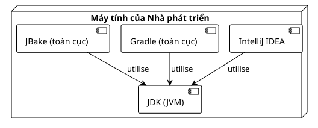

Điều 0: Thiết lập Môi trường để Tạo các Plugin Gradle
Đăng ngày 22 September 2025
Đối tượng mục tiêu: Các nhà phát triển muốn bắt đầu tạo plugin Gradle.
Giới thiệu
Để phát triển các plugin Gradle một cách hiệu quả, một môi trường phát triển được cấu hình tốt là điều không thể thiếu. Một thiết lập tốt sẽ giúp bạn tiết kiệm thời gian, giảm bớt những khó chịu và đảm bảo tính nhất quán cho các build của bạn.
Hướng dẫn này tập trung vào bốn trụ cột thiết yếu:
-
Le JDK(Java Development Kit), vì Gradle và JBake chạy trên JVM.
-
Un IDEhiện đại (IntelliJ IDEA) với sự hỗ trợ tốt cho Kotlin và Gradle.
-
Gradlechính nó, để khởi tạo các dự án.
-
JBake, công cụ của trang web tĩnh của chúng tôi.

1. JDK: Bộ máy của Gradle
Gradle là một ứng dụng chạy trên Java Virtual Machine (JVM). Do đó, việc cài đặt một JDK là điều kiện tiên quyết tuyệt đối.
Chọn phiên bản nào?
Khuyến nghị sử dụng phiên bản LTS (Long-Term Support) của Java. Hiện tại,JDK 17 ou JDK 21là những lựa chọn tuyệt vời.
Cài đặt qua SDKMAN! (Khuyên dùng)
SDKMAN! là một công cụ tuyệt vời để quản lý các phiên bản của nhiều SDK, bao gồm cả Java và Gradle.
Cài đặt SDKMAN!
curl -s "https://get.sdkman.io" | bash source "$HOME/.sdkman/bin/sdkman-init.sh"Cài đặt một phiên bản JDK
# Pour lister les versions de Java disponibles sdk list java
# Pour installer Java 17 (par exemple, la distribution Temurin)
sdk install java 17.0.8-temKiểm tra cài đặt
java -versionBạn sẽ thấy phiên bản vừa cài đặt hiển thị.
2. IDE: IntelliJ IDEA
Đối với việc phát triển các plugin Gradle bằng DSL Kotlin,IntelliJ IDEAlà công cụ lựa chọn hàng đầu. Khả năng tích hợp của nó với Gradle và Kotlin là vô đối.
-
Phiên bản Cộng đồng :Miễn phí và hoàn toàn đủ để bắt đầu.
-
Phiên bản Ultimate:Là một phiên bản trả phí, nó cung cấp các tính năng nâng cao cho phát triển web và cơ sở dữ liệu.
Tải xuống phiên bản phù hợp với bạn từ trang web của JetBrains: https://www.jetbrains.com/idea/download/
IDE sẽ tự động phát hiện các tệp của bạn`build.gradle.kts` et settings.gradle.kts, mang đến cho bạn khả năng tự động hoàn thành mạnh mẽ, điều hướng mã nguồn và các công cụ gỡ lỗi tích hợp.
3. Gradle : Công cụ build
Mặc dù mỗi dự án sẽ sử dụng phiên bản Gradle riêng thông qua Gradle Wrapper, nhưng việc có một bản cài đặt Gradle tổng thể sẽ hữu ích cho các tác vụ như khởi tạo dự án mới (gradle init).
Cài đặt thông qua SDKMAN!
Tương tự như đối với JDK, SDKMAN! đơn giản hóa việc cài đặt Gradle.
Cài đặt Gradle
sdk install gradleKiểm tra cài đặt
gradle -vLệnh này sẽ hiển thị phiên bản của Gradle, Kotlin, Groovy và JDK đang được sử dụng.
4. JBake : Trình tạo trang web tĩnh
JBake là công cụ mà chúng ta sẽ sử dụng để chuyển đổi các tệp nguồn của mình (như tệp này) thành một trang web tĩnh. Có một bản cài đặt cục bộ rất tiện lợi để xem trước các thay đổi.
Cài đặt thông qua SDKMAN!
Giống như đối với các công cụ khác, SDKMAN! là phương pháp đơn giản nhất.
Cài đặt JBake
sdk install jbakeKiểm tra cài đặt
jbake -vLệnh này sẽ hiển thị phiên bản của JBake và thông tin về môi trường Java mà nó đang sử dụng.
5. Gradle Wrapper: Thực hành tốt nhất tuyệt đối
Một khi dự án của bạn đã được tạo (điều mà chúng ta sẽ thấy trong bài viết tiếp theo), bạn không nên sử dụng lệnh global nữa`gradle`Bạn chưa cung cấp văn bản cần dịch. Vui lòng gửi nội dung tiếng Pháp mà bạn muốn dịch sang tiếng Việt. Thay vào đó, bạn sẽ sử dụngGradle Wrapper(./gradlew), một tập lệnh được bao gồm trong dự án của bạn.
Tại sao?
-
Khả năng tái lập:Wrapper đảm bảo rằng mỗi người làm việc trong dự án (bao gồm cả máy chủ CI/CD của bạn) đều sử dụng chính xác lacùng phiên bản Gradle, từ đó loại bỏ các lỗi build do sự khác biệt giữa các môi trường.
-
Sự đơn giản:Không cần cài đặt Gradle thủ công để đóng góp cho một dự án.
Chỉ cần clone repository và chạy`./gradlew`Vui lòng cung cấp văn bản cần dịch.
Một câu lệnh điển hình sẽ trông như thế này:
# Ne pas faire : gradle build
# À faire :
./gradlew build6. Docker và Portainer: Để có các Bản Build có thể Tái lập (Tùy chọn)
Mặc dù không hoàn toàn bắt buộc để viết một plugin, Docker và Portainer là những công cụ DevOps hiện đại giúp đơn giản hóa đáng kể việc tạo các bản build có khả năng tái lập và quản lý môi trường của bạn.
Cài đặt Docker Engine
Docker cho phép bạn đóng gói ứng dụng và các phụ thuộc của nó vào một container.
Cài đặt Docker thông qua script chính thức:
curl -fsSL https://get.docker.com -o get-docker.sh sudo sh get-docker.shQuản lý Docker không cần sudo (khuyên dùng):
Thêm người dùng của bạn vào nhóm`docker`Vui lòng cung cấp văn bản cần dịch.
sudo usod -aG docker $USERdocker run hello-worldQuản lý Docker với Portainer (GUI)
Portainer là một giao diện web nhẹ để quản lý các container Docker của bạn.
Tạo một volume cho dữ liệu của Portainer:
docker volume create portainer_dataKhởi chạy container Portainer:
docker run -d -p 8000:8000 -p 9443:9443 --name portainer --restart=always -v /var/run/docker.sock:/var/run/docker.sock -v portainer_data:/data portainer/portainer-ce:latestBây giờ bạn có thể truy cập giao diện Portainer tại`https://localhost:9443`Vui lòng cung cấp nội dung cần dịch.
Kết luận
Môi trường của bạn hiện đã sẵn sàng! Bạn có một JDK, IDE phù hợp nhất, Gradle và JBake. Với việc bổ sung Docker, bạn cũng đã sẵn sàng để tạo các bản build được container hóa và có khả năng tái lập. Nền tảng vững chắc này sẽ cho phép bạn tập trung vào điều cốt lõi: phát triển các plugin mạnh mẽ và hữu ích.
Trong bài viết tiếp theo, chúng ta sẽ sử dụng lệnh`gradle init`để tạo cấu trúc cho dự án plugin đầu tiên của chúng ta.